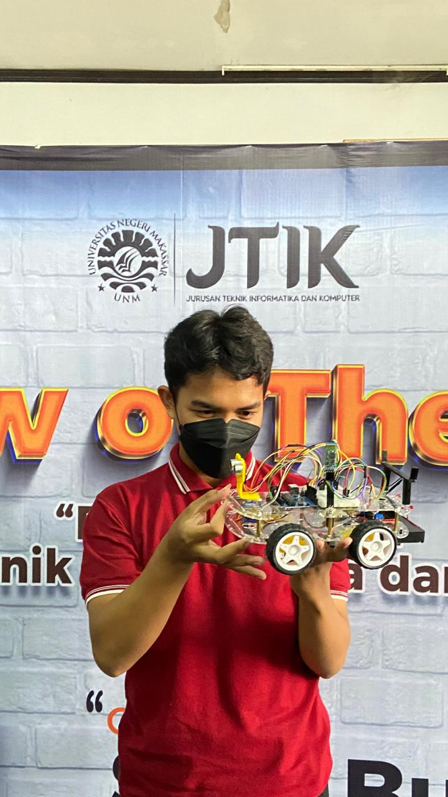

Nama : AQSA MAHMUD
NIM : 230210501065
Kelas : TEKOM C
Alamat : Jl. Karaeng Loe Sero, KAB Gowa
Asal Sekolah : SMK Negeri 2 Makassar
Universitas Negeri MakassarTidak ada kata terlambat untuk menjadi lebih baik
Pengalaman Selama Perkuliahan di TEKOM |
|
Semasa Smk saya sempat terpikir untuk tidak melanjutkan pendidikan (kuliah), Tapi Alhamdulillah saya dapat jalur undangan tapi tidak lolos sehingga saya bertekad untuk mencoba di jalur tes, alhamdulillah lolos menajdi mahasiswa di Universitas negeri Makassar, prodi teknik komputer Selama jadi mahasiswa di Universitas Negeri Makassar, saya sempat bingung karena ternyata banyak mempelajari tentang bahasa pemrograman. Seiring berjalannya waktu saya mulai terbiasa dengan hal itu. Masuk ke dalam prodi Teknik Komputer saya telah belajar tentang bahasa pemrograman, membuat database, dan membuat html seperti yang saya buat ini. prosesnya memang tidak mudah, tapi saya yakin saya pasti bisa untuk melewatinya. Semoga saya juga dapat lulus tepat waktu dengan hasil yang memuaskan. |
|
Daftar Mata Kuliah yang telah dipelajari:
|
|
Daftar Dosen:
|
| No | Nama Lengkap | Nama Panggilan | Jenis Kelamin | Alamat | Asal Sekolah |
|---|---|---|---|---|---|
| 1 | uqasyah | aqa | Laki-laki | Jl. toddopuli 10 | SMKN 2 Makassar |
| 2 | Alfira damayanti | fira | Perempuan | Dg tata 1 | SMKN 1 Makassar |
| 3 | Muhammad Sabir | Sabir | Laki-laki | Jl. Bukit Tamarunang | SMA 14 Gowa |
Saya telah menempuh berbagai pelatihan dan program pendidikan, Sewaktu Sekolah Dasar saya bersekolah di SDI Tamarunang, SMPN 40 Makassar, SMKN 2 Makassar saya juga Pernah Mengikuti Pelatihan Dari kominfo Skema Junior
| Hari | Mata Kuliah | Jam | Ruang |
|---|---|---|---|
| Senin | Pemrograman Web | 08:00 - 10:00 | Lab 2 |
| Rabu | Database | 10:00 - 12:00 | Lab 3 |
| Jumat | Sistem Informasi | 13:00 - 15:00 | Lab 1 |
|  |